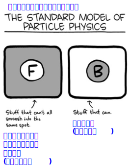
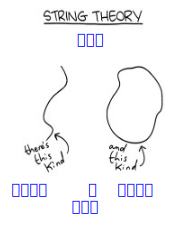

Science
Abridged Beyond the Point - of - Usefulness
科学
有用性の限界を超えた要約
Weinersmith, Zach
PHYSICS 物理
1.1 History 歴史
Aristotle said a bunch of stuff that was wrong.
Galileo and Newton fixed things up. Then Einstein
broke everything again. Now, we’ve basically
got it all worked out, except for small stuff, big
stuff, hot stuff, cold stuff, fast stuff, heavy stuff,
dark stuff, turbulence, and the concept of time.
アリストテレスは間違ったことをたくさん言いました。
ガリレオとニュートンがそれを修正しました。そしてアインシュタインが
再びすべてを壊しました。今では、基本的にすべて解明されています。
小さいもの、大きいもの、熱いもの、冷たいもの、速いもの、重いもの、暗いもの、乱流、そして時間の概念を除いては。
1.2 Major Insights 主な洞察
-
• If you punch the universe, it punches right
back.
宇宙を殴れば、宇宙も
殴り返します。
-
• If you know exactly where something is, you
can be sure it’s going between zero and
299,792,458 meters per second.
何かが正確にどこにあるのかがわかれば、
それが毎秒0メートルから
毎秒2億9,979万2,458メートルの間で動いていると確信できます。
-
• You can get different stuff, but you can’t get
more stuff, and you can’t get rid of stuff.
違うものを手に入れることはできますが、
もっと多くのものを手に入れることはできませんし、
物を捨てることもできません。
-
• Every time we check, God appears to be
playing dice.
確認するたびに、神様は
サイコロを振っているように見えます。
-
• It turns out gravity is less like a strong man
tugging on a rope than a chubby man sitting
on a trampoline.
重力は、力持ちの男がロープを引っ張るよりも、
太った男がトランポリンに座っているようなものだと分かりました。
-
• There are exactly three numbers: 0, 1, and
∞. The use of anything else is a form of dandyism.
数字は0、1、そして
∞の3つだけです。それ以外の数字を使うのは、一種のダンディズムです。
-
• If you get a Physics professorship, later in
life you can go around saying crazy stuff and
people will believe you.
物理学の教授になれば、後々
突拍子もないことを言って回っても
人々は信じるようになる。
1.3 Subdisciplines 分野
Thermodynamics: The study of how everything
is getting worse all the time, and how if you speed
that up a little you can run an engine.
熱力学：あらゆるものが
常に悪化していく仕組み、そしてそれを少し加速すれば
エンジンを動かすことができる仕組みを研究する学問。
Cosmology: The study of how a bunch of weird
stuff happened in the first femtosecond of reality
and then after that it got pretty dull.
宇宙論：現実の最初のフェムト秒の間に、様々な奇妙な出来事がどのように起こり、その後は退屈になるのかを研究する学問。
Relativity: The study of how, if you have a clock
and I have a clock, it doesn’t mean a damn thing.
相対性理論：もしあなたが時計を持っていて、私が時計を持っていたとしても、それは何の意味も持たないということを研究する学問。
Condensed Matter Physics: The study of, like,
chunks of stuff.
凝縮物質物理学：物質の塊を研究する学問。
Astrophysics: The quantitative determination of
the breadth of human insignificance.
天体物理学: 人間の無意味さの広がりを
定量的に決定する。
Particle Physics: The attempt to determine the
beautiful truth underlying reality by smashing little
bits of it as hard as possible.
素粒子物理学：現実の根底にある美しい真実を、
可能な限り強く、小さな断片を粉砕することで
解明しようとする試み。
Quantum Physics: So, okay look, reality isn’t
packets, it’s a point moving on a sphere and it’s
in infinite-dimensional space because...aw man...
just forget it.
量子物理学: そうですね、現実はパケットではなく、
球面上を移動する点であり、
無限次元空間にあります。なぜなら…ああ、もう…
忘れてください。
1.4 Recent Developments 最近の動向
-
• Long-held predictions about the nature of
particles and gravity have been proven startlingly
correct by experiment, which sucks.
粒子と重力の性質に関する長年の予測が
実験によって驚くほど正しいことが
証明されたのは残念だ。
-
• The universe is 95% dark stuff that we don’t
understand. The remainder is this sticky matter
that makes up things like you and smallpox.
宇宙の95%は、私たちが理解できない闇の物質です。
残りは、あなたや天然痘のようなものを構成する
粘着性のある物質です。
-
• Gravity makes wobbles and we found the
wobbles so hooray!
重力は揺れを生み出し、私たちはその揺れを発見しました
やったー！
-
• Quantum mechanics and gravity still aren’t
on speaking terms.
量子力学と重力は
まだ議論の余地がありません。
-
• Everything in reality appears to be moving
away from you as fast as it can.
現実では、すべてがあなたから
できるだけ早く遠ざかっているように見えます。
1.5 Important Charts 重要な図

